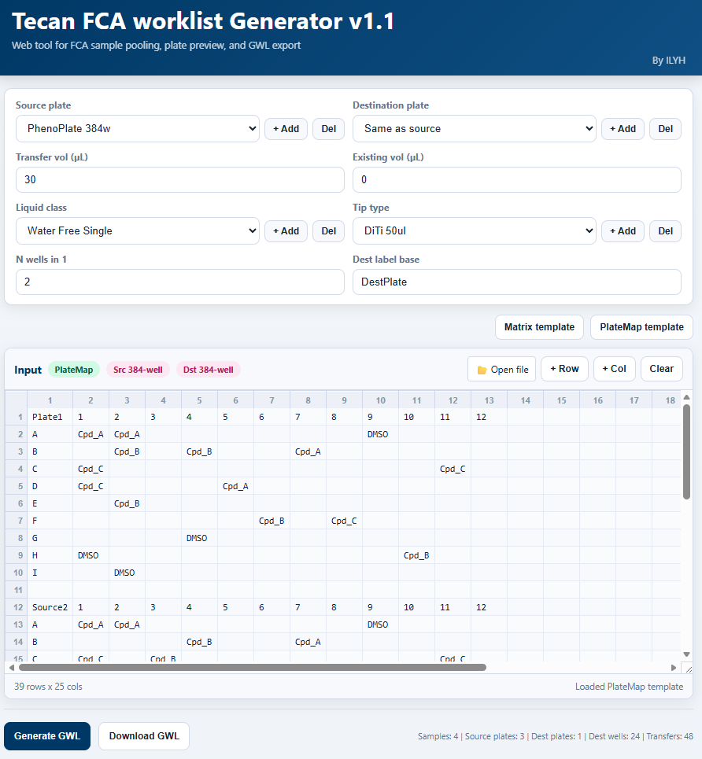
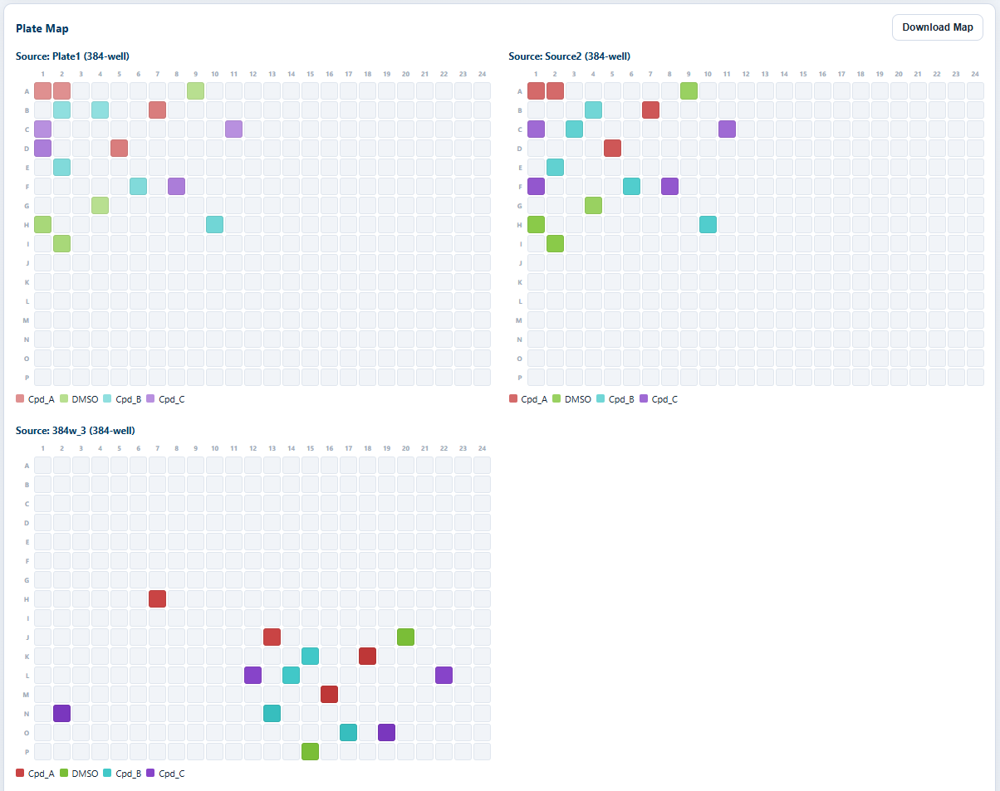
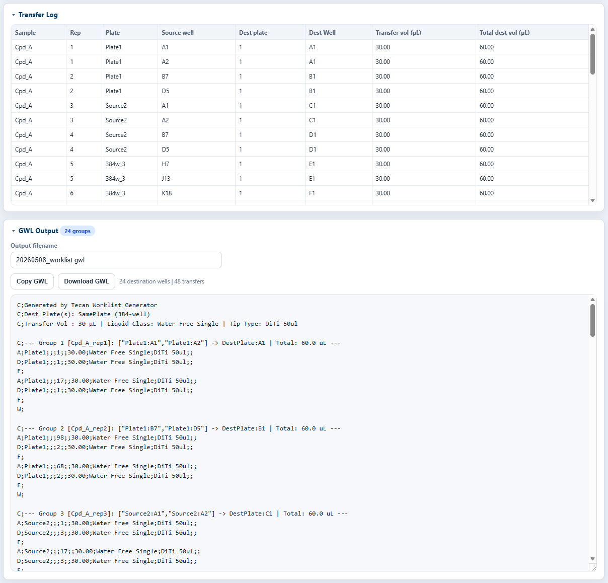

1How it works
Step 1
Configure run
Pick source and destination plates (96 / 384 / PhenoPlate), transfer / existing volumes, liquid class, tip type and the pooling factor N wells in 1.
Step 2
Drop a plate map
Open a Matrix or PlateMap template (CSV / Excel) covering one or more source plates; the input grid auto-detects rows / cols and parses sample names per well.
Step 3
Generate & preview
Click Generate GWL: every source plate renders as a colored map, every transfer is listed in a Transfer Log table, and the GWL text appears below.
Step 4
Download GWL
Copy the GWL or download YYYYMMDD_worklist.gwl directly into Tecan FluentControl / EVOware — sample, source plates, dest plates and total transfer count are summarized at the bottom.
2Preview
Configure run & load plate map
All run parameters live in a single panel: source / destination plate types (96 / 384 / PhenoPlate), transfer and existing volumes, liquid class, tip type, destination label and the pooling factor
N wells in 1. The grid below ingests Matrix or PlateMap templates spanning multiple source plates and a live status bar reports samples, source plates, destination wells and total transfers.
Plate-map preview, every source at a glance
Every source plate is rendered as its own well grid with samples color-coded by name (Cpd_A, DMSO, Cpd_B, Cpd_C…). Multi-plate runs are laid out side by side so you can sanity-check layout before committing to liquid handling — download the rendered map as a single image.

Transfer log + ready-to-run GWL
A row-per-transfer log (sample, replicate, source plate / well, dest plate / well, transfer & total volumes) sits above the generated GWL text. The GWL is grouped by destination well with sample-named comments, ready to copy or download as
YYYYMMDD_worklist.gwl straight into Tecan FluentControl / EVOware.